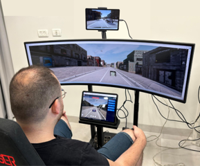
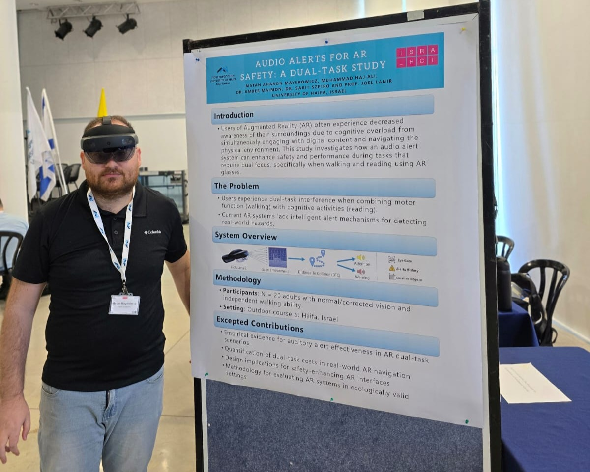
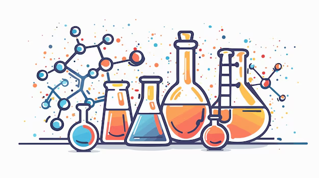
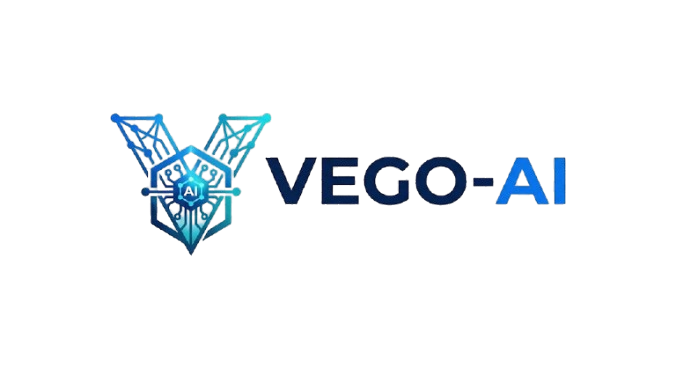

Recent Work
A selection of my academic research, system development, and interface design projects.

Information Systems TA
Facilitated lab sessions for "Design and Development of Information Systems." Guided students in mastering UML, ERD, and DFD modeling techniques, providing a solid foundation in system architecture.

Autonomous Vehicle Teleoperation
Developed a real-time remote telepresence system using ROS, Python, and ReactJS. Designed for Wizard of Oz experiments to enable remote monitoring and control of autonomous vehicles.

AR Safety Assistant (Thesis)
Designing and developing an augmented reality safety assistant using Unity (C#). The system leverages AR to provide real-time guidance, enhancing situational awareness in complex environments.

Chemistry Simulation App
Developed an interactive web application for chemistry education using NetLogo. Created engaging simulations to help students visualize and understand complex chemical concepts through hands-on learning.

Vego AI
Built a multi-agent pipeline application with a PySide6 GUI, featuring four specialized agents plus an orchestrator that together represent the staff of a Design and Implementation of Information Systems course, supporting students through their system-design workflow.